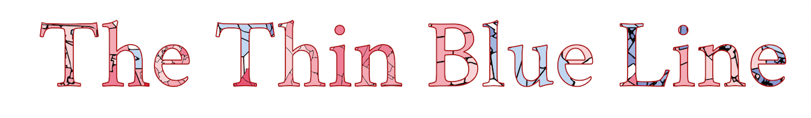

Are congressional districts drawn to accurately elect congressman who can best represent Pennsylvania’s rapidly changing demographics?
Rebecca Hui - Angel Jacome - Stephanie Tuerk
How Pennsylvania Voted: Congressional Districts vs. Popular Votes
During the 2016 election, Pennsylvania, a traditional swing state, went red. More surprising is that despite having nearly equal popular votes between Democrats (46%) and Republicans (52%), only 5 Congressional seats went to Democrats, while 13 seats have gone to Republicans¬—a stark contrast. Meanwhile, Pennsylvania has undergone significant demographic changes since 2010 with heavy influxes of non-white immigrants, a [change] in education, and [changes] in income as can be seen in 2015 Census data. Subsequently, concentrated pockets of blue votes have begun forming in traditionally red zones. To understand peculiarities in Congressional District boundaries, this visualization seeks to compare voting patterns between Congressional Districts and census tracts, changing demographics. Are congressional district districts drawn to accurately elect congressional representatives who can best represent Pennsylvania’s rapidly changing demographics?
Click a District to Explore
A History of Redistricting
This phenomena comes through redistricting, a method that determines the boundaries of districts for those that represent residents of the district. Districts can be as simple as neighborhood associations, school boards, or special districts that go unnoticed. Members of the United States Congress are elected through districts, either through state boundaries for Senators or drawn districts for the House of Representatives. The method in which these districts are drawn has been a political question since colonial times.
This phenomena comes through redistricting, a method that determines the boundaries of districts for those that represent residents of the district. Districts can be as simple as neighborhood associations, school boards, or special districts that go unnoticed. Members of the United States Congress are elected through districts, either through state boundaries for Senators or drawn districts for the House of Representatives. The method in which these districts are drawn has been a political question since colonial times.
Originally, districts were defined by borders of towns, counties, or groups of municipalities that was defined by state law The common term for redrawing districts came from Massachusetts governor Elbridge Gerry altering election districts in Northern Massachusetts to benefit his political party. The new district looked like a salamander and thus the term gerrymander came to be.
State legislatures continued the practice of redrawing district for a groups benefit. Finally, in the 1960s, the Supreme Court ruled that such redistricting violated the Constitution due to population disparities. It set forth the rule that each legislative district must have equal population (with some slack) and that redistricting cannot limit the political power of racial groups. As populations shift, district boundaries readjust to keep relatively equal populations representatives. With new population information every decade from the census, district boundaries are redrawn.
Flip the District
How many votes would it take to flip the district? Just from the 2016 election, CDs [x], [y]. [z], were very close to the 50% threshold prior to turning blue., but ultimately, went red. This interaction seeks to demonstrate just how large areas can swallow up areas that already may be mostly represented by blue counts.
Next Steps
After going through and exploring the district data, maybe you see that districts do not best represent their constituents. There are efforts to alter redistricting and to remove possible political influence. This includes an upcoming Supreme Court Case and efforts to show this is an issue. Some states have established independent committees to prevent political influence. They ban legislators and lobbyist to participate on these committees.
Pennsylvania congressional district maps has changed over the years. You can play with creating your own districts at a smaller scale in Philadelphia here.